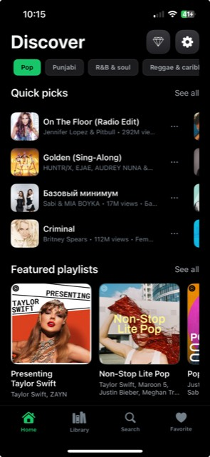
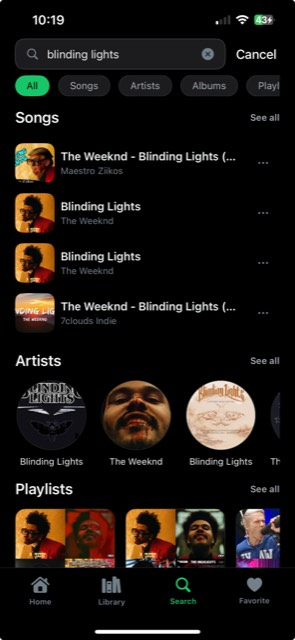
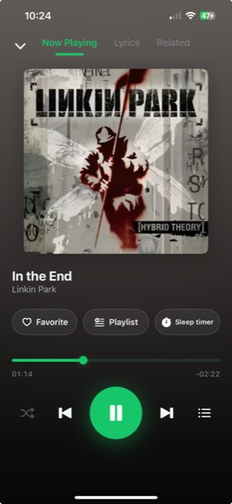
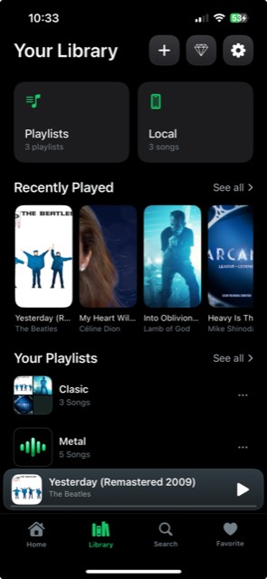
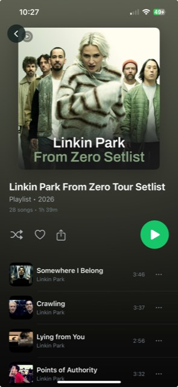

How can we help?
Find answers, troubleshoot playback issues, or get help with Tunora.
Browse by topic
Pick a category to jump straight to the answers you need.
Playback
Now Playing, queue, shuffle, repeat, sleep timer and the equalizer.
Search & Discovery
Search songs, artists and playlists, plus genres and related music.
Library & Local Music
Import from Files, Apple Music and Wi-Fi transfer for offline playback.
Playlists & Favorites
Create playlists, set covers, and manage songs, artists and favorites.
Premium & Subscriptions
Tunora Pro, managing your subscription, and restoring purchases.
Settings & Troubleshooting
Region, audio, appearance, backup & restore, and fixing common issues.
Popular questions
The answers Tunora users look for most often.
- Why isn't a song playing?
- How do I import music into Tunora?
- How do I transfer music using Wi-Fi?
- How do I create a playlist?
- How do I use the Equalizer?
- How does the Sleep Timer work?
- How do I manage my Tunora Pro subscription?
- How do I restore my purchase?
- Why can't I find a particular song?
- Why is streaming unavailable?
- How do I contact Tunora support?
- No matching questions. Try different keywords, or contact support.
A quick look at Tunora
The main screens you'll use — Home, Search, Now Playing, Library and playlists.





Swipe to see more screens →
Still need help?
If you can't find an answer here, our team is happy to help you directly.